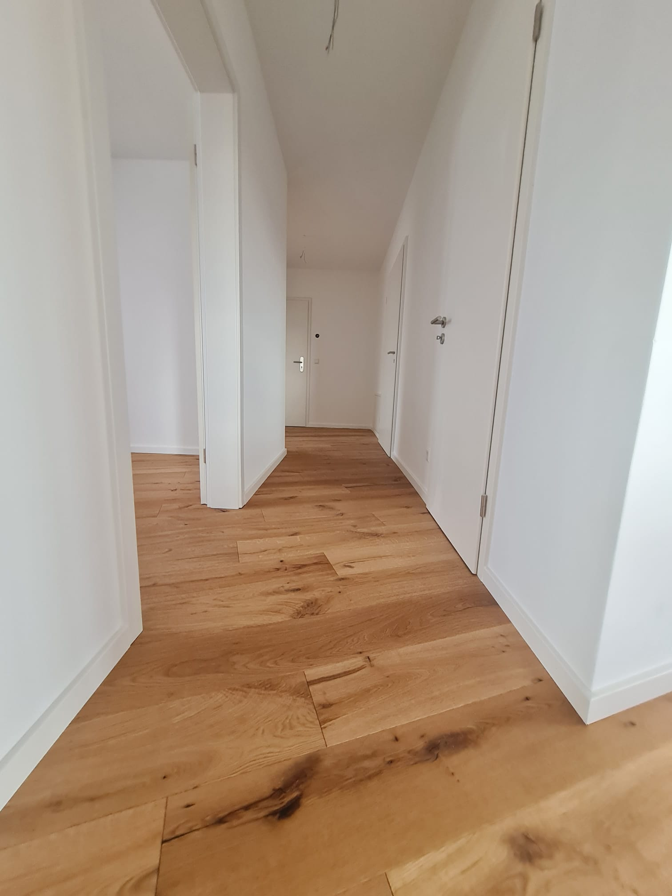

Traditioneller Kirschholzboden
Eine exquisite Kirschholzboden-Installation, die zeitlose Eleganz verkörpert. Dieses Projekt kombiniert traditionelle Muster mit Hochglanz-Finish, um einen luxuriösen und dauerhaften Eindruck zu schaffen.
Projektspezifikationen
- Material: Brasilianisches Kirschholz
- Muster: Traditionelles Streifenmuster mit Bordüren
- Oberfläche: Hochglanz-Polyurethan
- Fläche: 102 m²
- Dauer: 15 Tage
Projektgalerie

Komplette Raumansicht mit den reichen Kirschholztönen

Detail des Hochglanz-Finishs und der Maserung

Präzisionsschnitte und Musterausrichtung

Maßgefertigte Bordüren und Eckdesign
Projektablauf
- Materialauswahl und Qualitätskontrolle
- Klimatisierung und Holzakklimatisierung
- Detaillierte Musterplanung
- Untergrundvorbereitung und Feuchtigkeitssperre
- Installation der Hauptfläche
- Maßgefertigte Bordüreninstallation
- Progressiver Schleifprozess
- Mehrschichtiger Hochglanz-Auftrag
- Verlängerte Aushärtungsphase
- Endkontrolle und Detailarbeiten
Interesse an einem ähnlichen Projekt?
Kontaktieren Sie uns für ein unverbindliches Beratungsgespräch und ein kostenloses Angebot.
Kostenloses Angebot